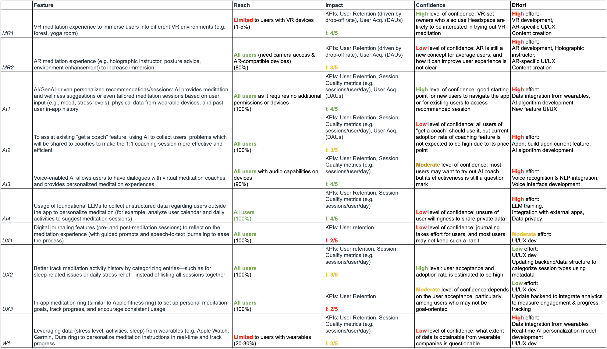

TLDR
- The problem I landed on
- Headspace is a meditation app that makes evidence-based meditation and mindfulness tools, along with making mental health coaching, therapy, and psychiatry more accessible, to help create life-changing habits to support people's mental health journey. They believe in providing every person access to lifelong mental health support, regardless of background and experience.
- People come to Headspace because they don't know how to manage their mental health, then face a large library and can't tell which session is right for them right now. Choice overload at the exact moment someone is least equipped to make a choice.
- The feature
- A personalized recommendation system drawing on stated mood, wearable signals, and in-app history — turning a library into something that responds to your current state.
Understanding users
Part I: Identifying segments & unmet needs
Before I can get started with feature brainstorming, I first identified the customer segment that uses Headspace, and why they use it:
Customer segment: young, affluent professionals in demanding jobs.
Here is a persona that is representative of that segment:
After determining the customer segment for Headspace, I brainstormed the possible reasons why they use Headspace. I created three hypotheses of the unmet needs of that segment:
- H1Stress from work pressure, a need to “stay on top of things,” and overattachment to commitments.
- H2Feeling lost from not knowing how to manage mental health.
- H3Lack of knowledge of how to make this habitual and track progress.
These hypotheses were then combined to create one umbrella jobs-to-be-done (JTBD) statement to understand what customers are trying to achieve by using Headspace:
- Situation
- When I feel overwhelmed by constant work demands
- Motivation
- I want to regain focus and calm my mind
- Expected Outcome
- So that I can be more productive and avoid burnout
Part II: Validating customer unmet needs
Once I identified the customer segment and their unmet needs, I validated these ideas by conducting my own research. I interviewed Headspace users and consulted publicly available information to see what the mental health app's users thought of their experiences.
Research approach: Interviews (N = 3), quick conversations (N = 5), and desk research (e.g., blogs, Reddit). Since this was a simple case study I did in my own time, I didn't conduct real usability testing.
These were some of my conclusions:
- Consistency. People couldn't make meditation habitual even while paying for an app designed to help them, and struggled to fit it into their schedules.
- Findability. Difficulty locating the right content across teachers, styles, and session types — and wanting better search.
- Confidence in the choice. This is the one I found most interesting. People weren't just failing to find content; they were unsure whether the style or teacher they'd picked was the right one, and reluctant to switch once habituated.
- Progress. Wanting to see and track what they'd done.
- Variety. Repetitiveness dulling the experience over time.
The findability and confidence items point at the same underlying condition. A large content library is a benefit if you know what you want and a cost if you don't — and someone opening a meditation app while overwhelmed is by definition in the second state. So, I redefined my JTBD statement according to my findings.
JTBD 1
- Situation
- When I feel overwhelmed by problems in my life
- Motivation
- I want to regain focus, calm myself, and address the root cause of the problem
- Expected Outcome
- So that I can avoid burnout and live a better life
JTBD 2
- Situation
- When I am feeling lost and don’t know how to start dealing with my stress
- Motivation
- I want to be able to find out what options are available easily
- Expected Outcome
- So that I can pick the most appropriate one to solve my issues quickly and with ease
JTBD 3
- Situation
- When I am new to meditation
- Motivation
- I want to follow a structured program, have access to help/assistance, and track my daily usage
- Expected Outcome
- So that I can stay accountable and measure my progress
Problem: Many users feel lost because they don't know how to manage their mental health, so they turn to Headspace. While Headspace has various great resources, users often feel overwhelmed and have a difficult time choosing the "right" meditation session for their current needs.
Target customer segment: The target customer is either a current subscriber who values effectiveness, and wants to choose an appropriate session as soon as possible so as to reduce time spent searching, or a potential new user who wants to start meditation but feels intimidated by the amount of choices available.
Deciding the feature
Part I: Idea generation
For the brainstorming process, I dumped any and all ideas that I had for a new feature that addresses users' pain points. I'll save you from having to interpret my very-much-everywhere thoughts. There are four categories: AR/VR immersive experiences, AI/ML features, improved UX, and wearables.
AR/VR immersive experiences
- MR1AR/VR meditation experience to immerse users into different VR environments (e.g. forest, yoga room)
- MR2Mixed reality/AR meditation experience (e.g., holographic instructor, posture advice, environment enhancement) to increase immersion
AI/ML features
- AI1AI/ GenAI-driven personalized recommendations/sessions: AI provides meditation and wellness suggestions or even tailored meditation sessions based on user input (e.g., mood, stress levels), physical data from wearable devices, and past user in-app history
- AI2To assist the existing “get a coach” feature, using AI to collect users’ problems which will be shared with coaches to make the 1:1 coaching session more effective and efficient
- AI3Voice-enabled AI allows users to have dialogues with virtual meditation coaches and provides personalized meditation experiences.
- AI4Usage of foundational LLMs to collect unstructured data regarding users outside the app to personalize meditation (e.g., analyze user calendar and daily activities to suggest meditation sessions)
User experience
- UX1Digital journaling features (pre- and post-meditation sessions) to reflect on the meditation experience (with guided prompts and speech-to-text journaling to ease the process), and then AI analyzes the entries (text or voice using voice tone analysis) to detect mood changes and determine patterns over time
- UX2Better track meditation activity history by categorizing entries - such as for sleep-related issues or daily stress relief—instead of listing all sessions together
- UX3In-app meditation ring (similar to Apple fitness ring) to set up personal meditation goals, track progress, and encourage consistent usage
Wearables
- W1Leveraging data (stress level, activities, sleep) from wearables (e.g. Apple Watch, Garmin, Oura ring) to personalize meditation instructions in real-time and track progress
Each feature idea in this case study was rooted in specific user insights gathered through interviews and desk research. For example, the pain point of users struggling to find relevant meditation content directly inspired the AI-driven personalized recommendation system. Similarly, users’ desire to track progress led to the conceptualization of features like a meditation activity ring and enhanced journaling tools.
Part II: Prioritization
To help me decide which feature to move forward with, I utilized the RICE prioritization framework. The RICE framework helped me rank the feature ideas based on four factors: Reach, Impact, Confidence, and Effort. Now, these four terms are quite subjective, so I started off by defining them:
- Reach
- How many users do we estimate the feature would be used by?
- Impact
- How significantly could this feature improve the KPIs shortlisted for that feature? (Note: “impact” affects feature-specific product metrics, which later ladder up into commercial metrics. We have made soft assumptions around this process)
- Confidence
- Of the total users that can use this feature, how many would use this feature (i.e., adoption rate)?
- Effort
- How much resources (dev time, people, cost) are required, adjusted for risk?
The following table shows the ratings/judgments for each feature idea using RICE.

Part III: Finalizing the feature
The winning feature (with high reach, high impact):
AI/GenAI-driven personalized recommendations/sessions: AI provides meditation and wellness suggestions or even tailored meditation sessions based on user input (e.g., mood, stress levels), physical data from wearable devices, and past user in-app history.
- High reach
- This feature has the potential to reach a large portion of the user base since it doesn’t require extra hardware and can be integrated seamlessly into the app.
- High impact
- Personalized recommendations based on user behavior, mood, and needs can significantly enhance session quality metrics, affecting usage rates and/or total users. Tailoring meditation sessions to the user’s current state can make the experience more effective and sticky.
- Justifying the high effort
- While the effort required to build and refine this feature is high (e.g., developing robust AI models, ensuring privacy, and integrating data), the potential increase in user retention and engagement rate makes it worthwhile. The ROI from personalized, AI-driven experiences can be substantial, as users are more likely to engage with content that feels customized to them.
Future State: Through AI personalization, Headspace can quickly provide the ideal session for each person's needs — whether they're dealing with insomnia, managing stress, or seeking tranquility. It transforms Headspace from a mere meditation library into a responsive wellness companion that evolves with each individual.
Feasibility & viability
Feasibility
The proposed personalization feature is highly feasible, thanks to the increased precision available from today’s LLMs so that it the build doesn't require a foundational model. A localized deployment of an open-source model, fine-tuned, is more cost-effective and sufficient for session recommendation. Headspace already has the relevant proprietary data (session history, stated preferences) and can access third-party health data with user consent.
The main requirements would be (1) training a localized deployment of an LLM (e.g., LLama 3.2), (2) construction of an API to continue querying the parent model, (3) increased database and data warehousing requirements, and (4) a new UX or front-end pages for this user flow.
Viability
The new feature aligns with Headspace’s goals, as personalization is essential in wellness apps. Enhancing UX by creating emotional value for users boosts engagement and, therefore, retention. This feature can also be a selling point to acquire new users, leading to increased acquisition, retention, and brand differentiation against other wellness apps. It also offers an opportunity for tier-based pricing; this is a strategic investment to boost revenue.
Self-directed exercise, not affiliated with or commissioned by Headspace. Based on publicly available information and a small number of user conversations.